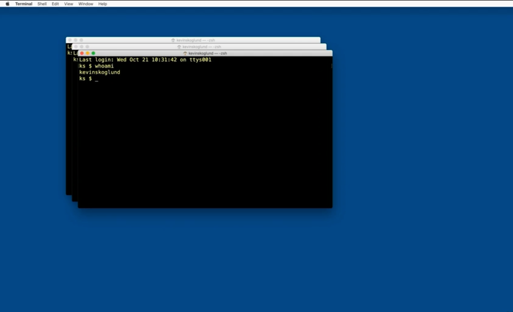
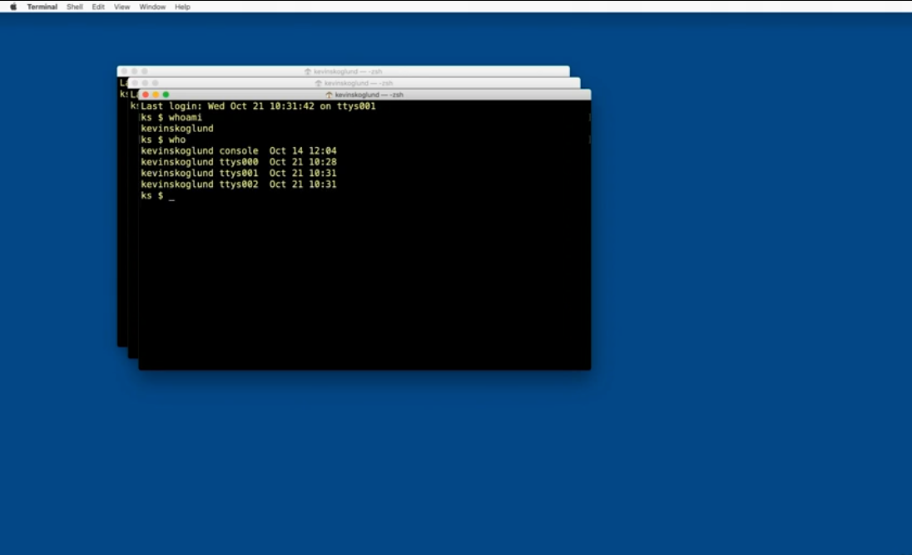
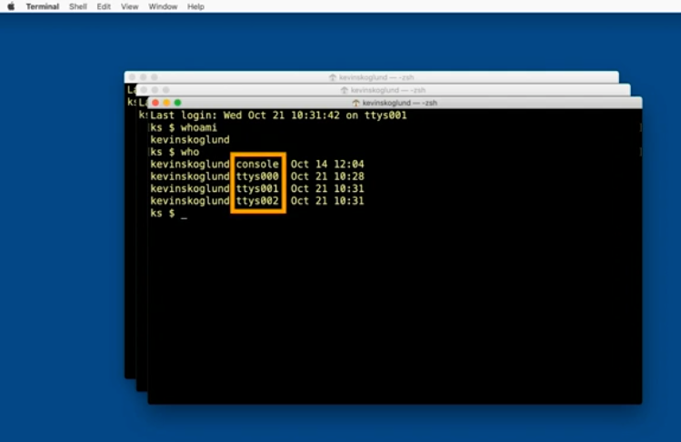

whoami - reports back the current user's username
each of these windows is a seperate user login BUT all being used by the same username
who - reports all currently logged in users
 The ttys are the three terminal windows currently open, and the console on top is the overall GUI version of the operating system